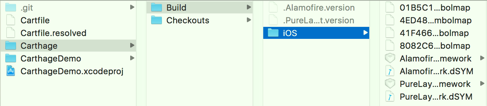
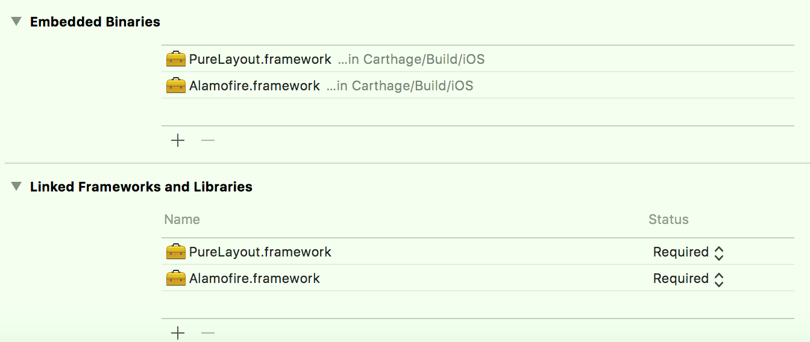

一、概述、安装
- Carthage类似于CocoaPods，用于iOS、macOS等平台的第三方框架的管理；其原理为将源代码编译成Dynamic framework（Xcode 6.0开始支持；Carthage是基于Swift的，Swift只支持Dynamic framework），之后手动拖入到项目中；其对项目工程文件的入侵性较小，并且可以与CocoaPods无缝集成，一个项目可以同时拥有CocosPods和Carthage；
可以通过Homebrew进行安装Carthage；
# 安装carthage（安装升级carthage，注意可能出现多版本共存bug） brew install carthage carthage version # 查看安装的版本
二、使用
1、在项目根目录更加一个名称为Cartfile的文件，其作用和Podfile一样，描述所需要的第三方框架；
touch Cartfile open -a Xcode Cartfile # 使用Xcode打开编辑 # Cartfile内容（可以像Podfile一样指定库的版本） github "Alamofire/Alamofire" == 4.7.0 github "PureLayout/PureLayout"2、执行更新命令，生成framework文件；
carthage update --platform iOS # 只生成iOS平台的framework执行完成后，会生成以下文件目录结构：
Carfile.resolved用于版本控制；Build目录为生成的Dynamic framework；Checkouts为从github上clone的源代码；

3、添加Dynamic framework到项目中；
方式一：Embedded Binaries（不建议使用）

- a. 由于是生成的是Dynamic framework，可以手动直接添加framework到General或Build Phase界面的"Embedded Binaries"中，之后就可以直接使用；
- b. 添加了"Embedded Binaries"后，"Link Binary With Libraries"中会自动添加上面手动添加的framework；
- c. 若只是仅仅手动添加framework到"Link Binary With Libraries"，则该framework只能是Static Framework，不可以为Dynamic framework；
- d. 手动拖拽framework，只会添加framework到"Link Binary With Libraries"中；
方式二：Link Binary With Libraries + Run Script；
a. 添加添加framework到"Link Binary With Libraries"后，在Build Phase界面点击左上角+按钮，添加一个Run Script，并做以下配置；

- a) 添加命令：
usr/local/bin/carthage copy-frameworks b) Input Files中添加每一个framework的输入路径（注意避免空格换行符），比如：
$(SRCROOT)/Carthage/Build/iOS/Alamofire.framework $(SRCROOT)/Carthage/Build/iOS/PureLayout.frameworkc)（可选，建议配置）Output Files中添加每一个framework的输出路径，比如：
$(BUILT_PRODUCTS_DIR)/$(FRAMEWORKS_FOLDER_PATH)/Alamofire.framework $(BUILT_PRODUCTS_DIR)/$(FRAMEWORKS_FOLDER_PATH)/PureLayout.framework
- a) 添加命令：
b.
carthage copy-frameworks命令的作用- a) 拷贝Dynamic framework，进而不需要在手动添加到"Embedded Binaries"中了；
- b)（最重要）裁减Dynamic framework；
- Carthage生成的Dynamic framework是包含模拟器和真机平台的，而App Store提交的包内不可以有没有用到的平台的代码（模拟器的），使用该脚本就是自动将无用代码去除；（
http://ikennd.ac/blog/2015/02/stripping-unwanted-architectures-from-dynamic-libraries-in-xcode/） - 为了优化编译速度，添加Output Files路径，这样只有在Input Files中的文件修改了或Output Files中的文件丢失的情况下，才会执行命令，否则每次运行都会去执行；（详情查看
https://github.com/Carthage/）
- Carthage生成的Dynamic framework是包含模拟器和真机平台的，而App Store提交的包内不可以有没有用到的平台的代码（模拟器的），使用该脚本就是自动将无用代码去除；（
三、其他说明
- 若更新了Cartfile文件（库的版本、增删库），则只需要重新执行
carthage update命令即可； - 注意：不要直接删除Xcode Simulator的文件目录(
~/Library/Developer/CoreSimulator/Devices/)；- 若需要删除，可以通过
Xcode->Window->Devices and Simulators进行删除； - 直接删除可能导致执行xcodebuild命令失败，报错
xcodebuild: error: Unable to find a destination matching the provided destination specifier: { platform:iOS Simulator, id:，进而导致执行carthage update命令失败； - 解决出现上面的问题，需要将所有模拟器手动删除后再新建一些模拟器即可；
- 若需要删除，可以通过